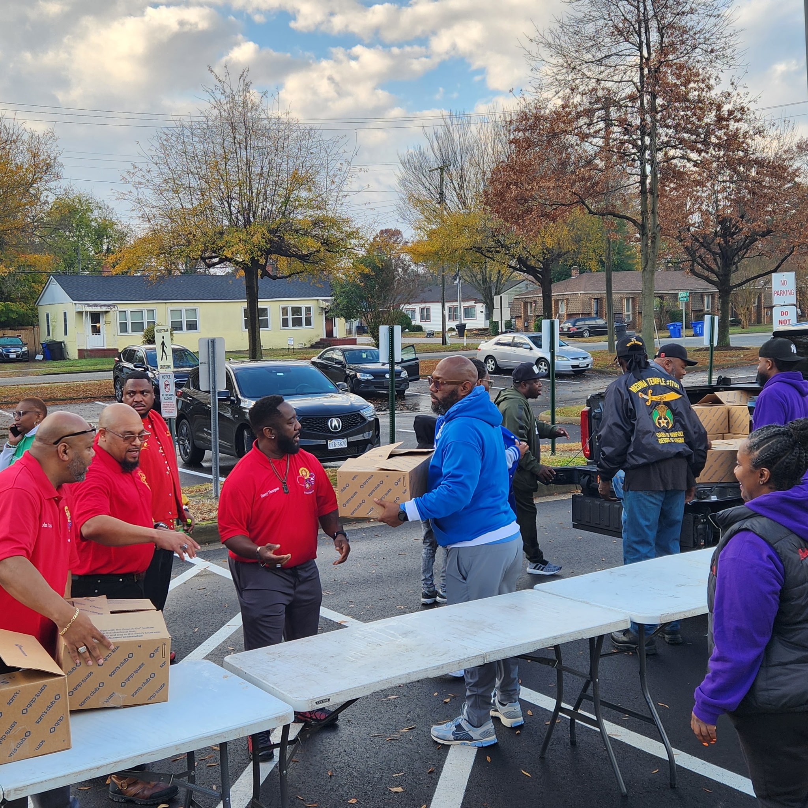
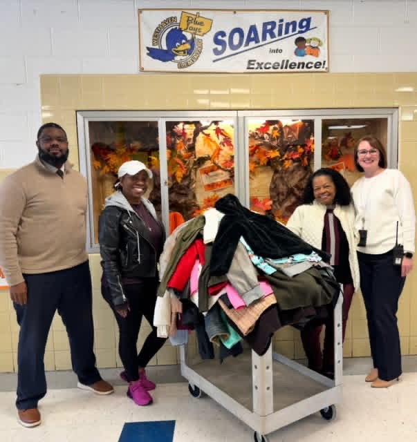

Cohort 2 📍 Region 2
Portsmouth City is implementing Community Schools work at three elementary schools: Douglas Park Elementary, Waterview Elementary, and Westhaven Elementary. Each school has a site coordinator and distinct program identity, but all three share the same core goals: reducing chronic absenteeism and suspensions, and improving academic outcomes. Portsmouth frames their work as community identity transformation and the three schools are at different stages of their Community Schools journey, from building relationships with new partners to implementing community event programming.
Engagement Reach Across Portsmouth This Fall
16 events | 1,530 attendees | 23 partners


Douglas Park Elementary partnered with the Foodbank and a local fraternity chapter to distribute Thanksgiving meal boxes to military-connected families. A reading assembly brought more than sixty students together with a guest presenter, and a community cookout on school grounds drew families and neighbors. At Westhaven Elementary, Gracefully Giving organized a coat donation drive as one of ten community partnerships the school has built in its first year.

Waterview Elementary launched TigerU!, a family empowerment initiative combining parent programming, ENCORE activities, and Community Schools under one umbrella. The PTA executive board behind TigerU! is the first active board at Waterview in more than five years, thanks to the Community Schools work. The first TigerU! event of the year was the Tiger Tales and Treats Trunk or Treat in October and more are planned.